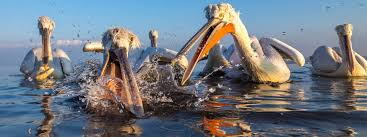

Rodzina pelikanowatych obejmuje gatunki wodne zamieszkujące cały świat poza okolicami okołobiegunowymi, północną, zachodnią i środkową Europą, Syberią, Saharą i północno-zachodnią Afryką, Nową Zelandią i Oceanią, nie występują też w głębi Ameryki Południowej i na jej wschodnich wybrzeżach[10]. Gatunki Starego Świata preferują wody śródlądowe, podczas gdy zamieszkujące Nowy Świat to ptaki morskie (poza pelikanem dzioborogim).
